✦ Kekayaan Kuliner
Mengenal hidangan ikonik dari berbagai penjuru Indonesia
✦ Jelajahi
Filter berdasarkan kategori untuk menemukan hidangan favorit Anda.
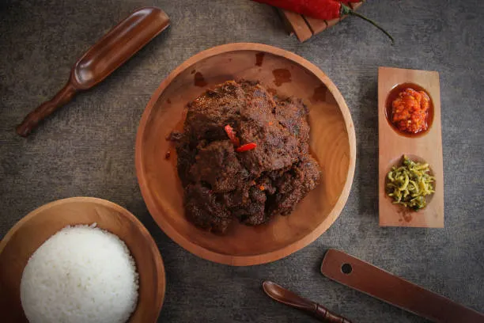
Sumatera BaratDaging sapi empuk dimasak dengan 40+ rempah pilihan selama berjam-jam hingga kering. Diakui UNESCO sebagai warisan budaya dunia.
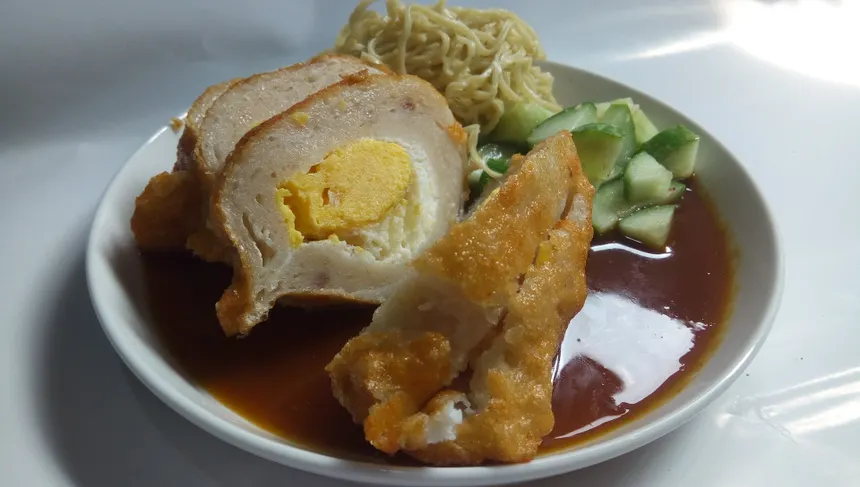
Sumatera SelatanOlahan ikan tenggiri segar dengan tepung sagu, berisi telur utuh di dalamnya, disajikan dengan kuah cuka khas yang asam-manis pedas.
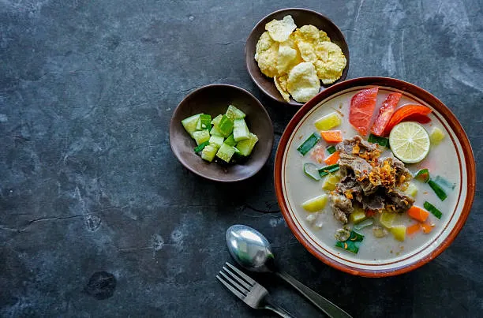
JakartaSoto khas Betawi dengan kuah santan susu yang kaya rasa. Berisi potongan daging sapi, tomat segar, dan emping yang renyah.
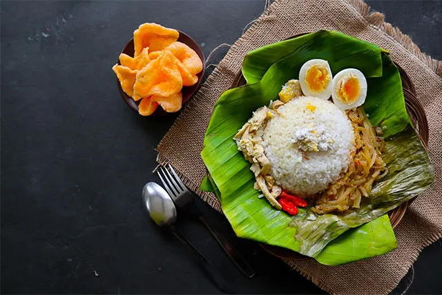
Jawa TengahNasi gurih dimasak dengan santan dan daun salam, disajikan lengkap dengan opor ayam, serundeng kelapa, dan sambal goreng.
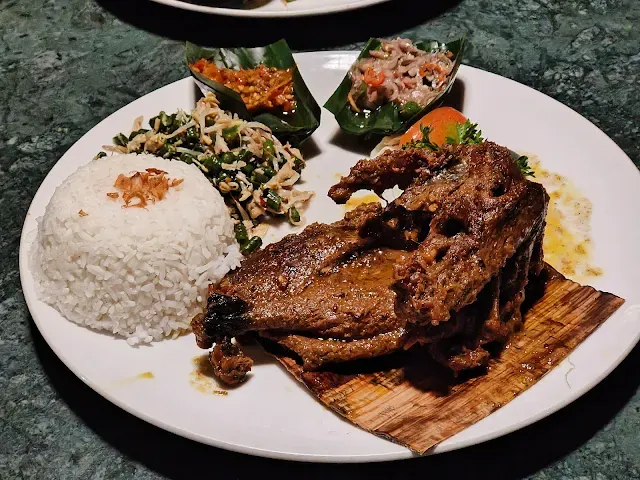
BaliBebek utuh dibumbui base genep khas Bali, dibungkus daun pisang lalu dipanggang perlahan selama 8 jam hingga dagingnya sangat empuk.
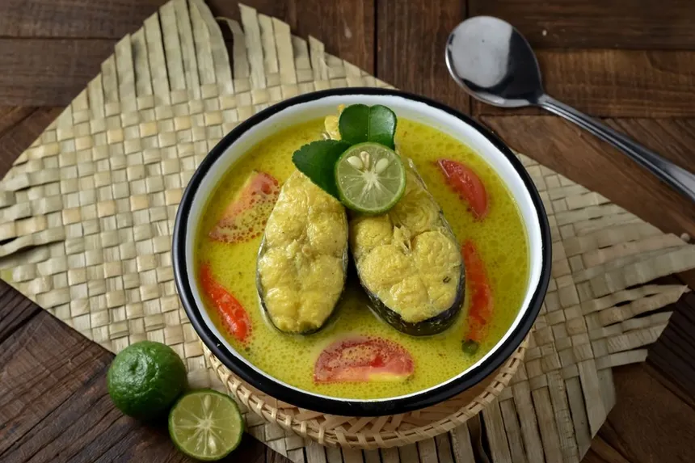
MalukuIkan kakap segar dimasak dengan kuah kunyit aromatik, belimbing wuluh, dan rempah-rempah Maluku yang khas dan menyegarkan.
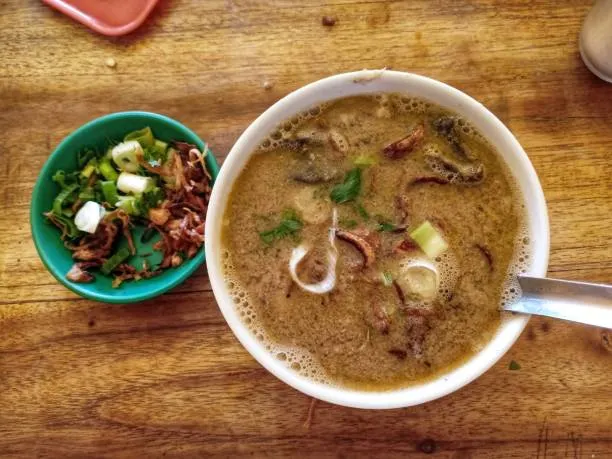
Sulawesi SelatanSup daging dan jeroan sapi dengan kuah kental berbumbu dari 40 macam rempah. Disajikan bersama ketupat buras yang khas.
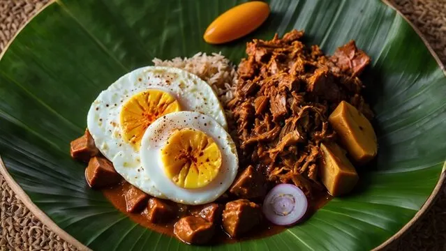
YogyakartaGori (nangka muda) dimasak berjam-jam dengan santan dan bumbu gula jawa hingga berwarna coklat manis, disajikan dengan opor ayam.
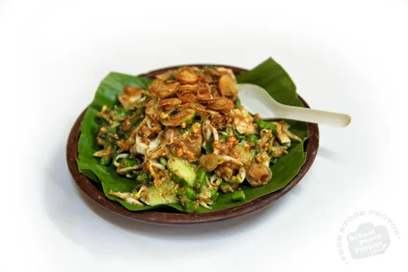
Jawa BaratSayuran mentah segar disiram bumbu kacang dengan terasi khas Sunda. Segar, bergizi, dan kaya cita rasa alami.
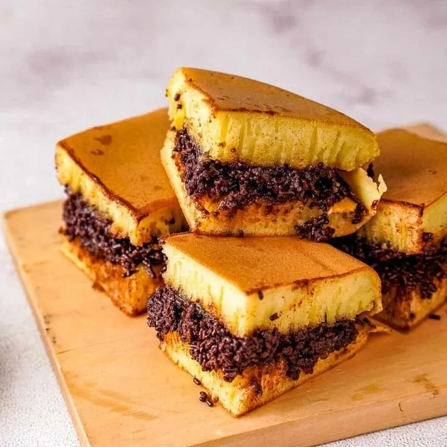
Jawa TimurKue tebal dan lembut dengan isian coklat, keju, dan kacang yang melimpah. Camilan favorit yang populer di seluruh Indonesia.
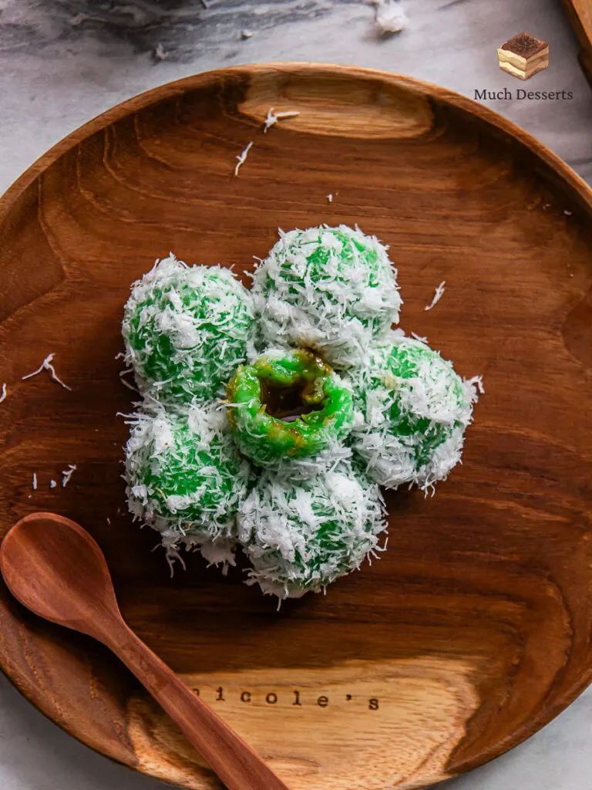
NasionalBola ketan kenyal berwarna hijau pandan berisi gula merah cair, dibalut parutan kelapa segar. Jajanan tradisional yang menggugah selera.
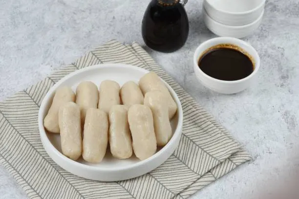
Sumatera SelatanPempek panjang khas Palembang tanpa isian telur, dibuat dari ikan tenggiri segar dan sagu, disajikan dengan kuah cuka gurih.
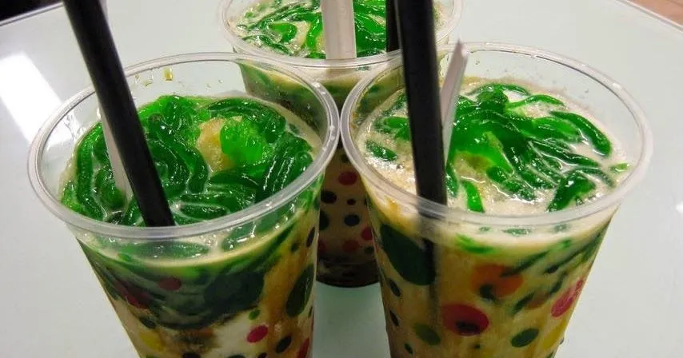
Jawa TengahMinuman segar khas Banjarnegara berisi cendol hijau pandan, santan segar, gula merah cair, dan es batu. Manis dan menyegarkan.
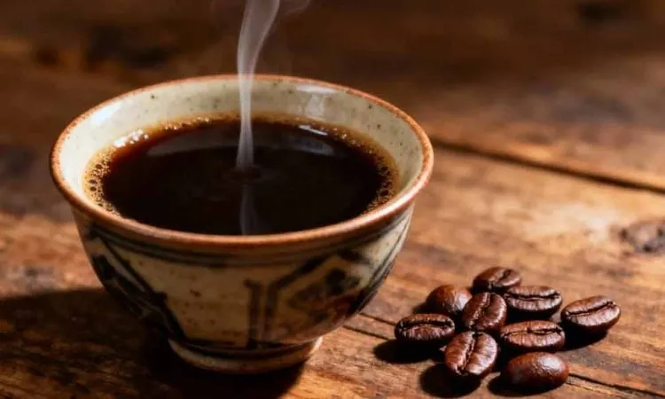
AcehKopi robusta khas Aceh yang disaring secara tradisional menggunakan kain, menghasilkan cita rasa kuat, pekat, dan aromatik.
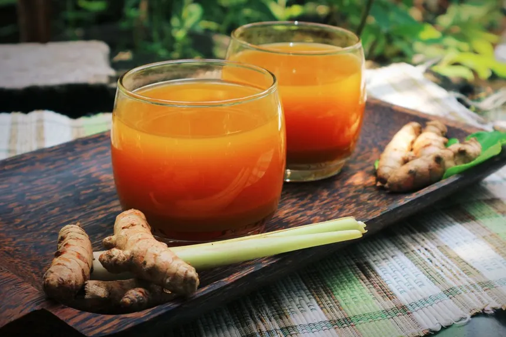
NasionalMinuman herbal tradisional berbahan kunyit segar, asam jawa, dan gula merah. Menyegarkan, menyehatkan, dan kaya antioksidan alami.
Minuman penghangat khas Sunda dari jahe, serai, kayu manis, dan susu. Sempurna dinikmati saat cuaca dingin atau malam hari.
✦ Ingin Mencoba?
Semua makanan khas di atas tersedia di menu kami. Pesan sekarang!
Lihat Menu & Pesan